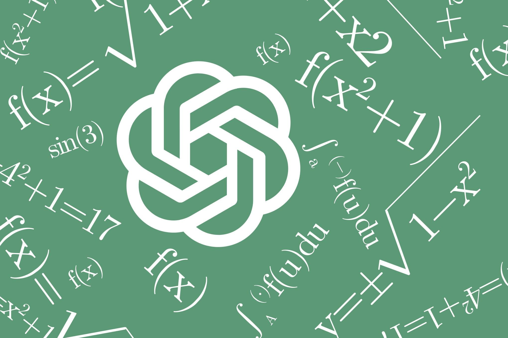

26 октября OpenAI опубликовала анонс о трёх новых результатах в математике, информатике и физике — менее чем через месяц после массового релиза сотен рукописей с решениями давних математических вопросов, который сообщество назвало «чистым безумием». На этот раз компания изменила схему: результаты в информатике и физике сопровождаются внешними экспертами («пастырями»), а математический результат выпущен напрямую, как в прошлый раз.
Первый результат — доказательство локального сглаживания Саджге для волнового уравнения Евклида во всех размерностях начиная с двумерной; по утверждению OpenAI, из него также следуют гипотезы максимума и размерности Какея и оценки сферического ограничения Штейна в внутренней части предполагаемой области.
Второй результат — самый громкий для информатиков: гипотеза экспоненциального времени, сформулированная в 1999 году и долгие годы считавшаяся верной фундаментальным допущением всей теории сложности, объявлена ложной. Заявка опирается на детерминированный алгоритм, который точно подсчитывает удовлетворяющие присваивания CNF-формул фиксированной ширины за субэкспоненциальное время и полиномиальную память; случай 3-SAT, по заявлению OpenAI, и опровергает ETH. Материалы и Lean-доказательство выложены на GitHub сразу, а проверять результат будет рабочая группа под руководством Рассела Импагльяццо и Рамамохана Патури — самих авторов гипотезы — и профессора MIT Раяна Уильямса.
Третий результат — «математически строгое доказательство существования» калибровочных квантовых теорий поля с фермионами в четырёх измерениях, включая квантовую хромодинамику и объединённое дополнение Стандартной модели. Полностью результат пока не опубликован: его курирует группа во главе с нобелевским лауреатом Дэвидом Гроссом, в составе Майкла Дугласа, Артура Джаффе, Игоря Клебанова и Никиты Некрасова.
OpenAI также выпустила открытое письмо к научному сообществу с вопросами: кто должен получать ранний доступ к ИИ-результатам, как учитывать вклад проверяющих и упрощающих, и какие нормы вообще применимы к ИИ-открытиям. Показательно, что собственный консультативный математический совет компании (AGMAI) накануне рекомендовал ИИ-лабораториям вообще отказаться от практики «назначенных получателей» — из-за неравного доступа, одолженной репутации и предвзятости отбора — и публиковать всё открыто, с Lean-формализацией. Так что даже если доказательства выдержат проверку, спор о том, как науке жить с ИИ-прорывами, только начинается: на осмысление материалов сообществу, по оценкам критиков, нужны годы.